The Withering World
Narrative-Driven Environmental Simulation
Learn MoreNarrative-Driven Environmental Simulation
Learn MorePhysics-Based 3D Side-Scrolling Adventure
Learn MoreFast-Paced Top-Down Zombie Shooter
Learn MoreHyper-Casual Game
Learn MoreHyper-Casual Game
Learn MoreStory-Based Puzzle Game
Learn More3D Multiplayer FPS
Learn MoreEducational Game on Safety & Cleanliness
Learn MoreTest out basketball mechanics in a simple 2D environment.
Learn MoreExperience realistic 3D basketball shooting mechanics.
Learn MoreManipulate gravity to solve puzzles and create innovative game mechanics.
Learn MoreChess tool for visualizing valid moves and enemy captures.
Learn MoreZombie Rush is a top-down, fast-paced shooter where players fend off relentless waves of the undead. Unlock new weapons, grab power-ups, and fight your way through escalating levels of chaos.
Zombie Rush was developed during my internship at Jabsz Gaming Studio, a fast-paced game development company. It is a shooter game designed for mobile platforms, offering a thrilling experience with intuitive controls and various weapon upgrades. Players face increasingly difficult waves of zombies, earning power-ups, and unlocking stronger weapons as they progress through the levels. The game is available on the Google Play Store.
Available now on Google Play Store.


 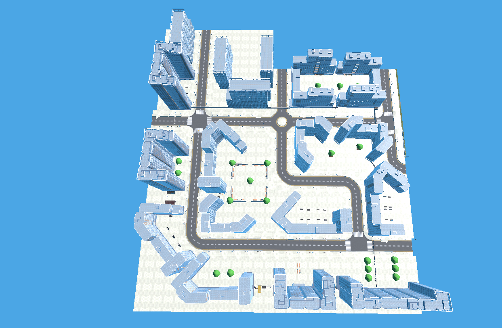
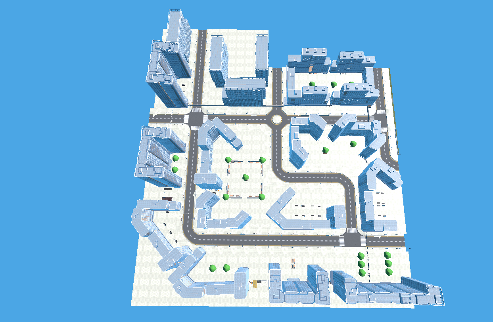
 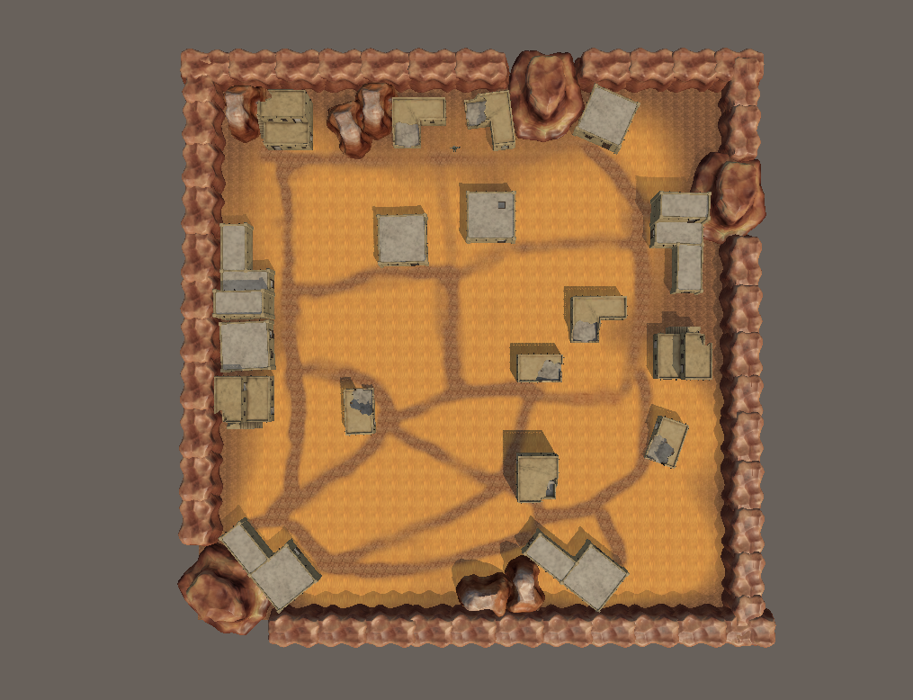
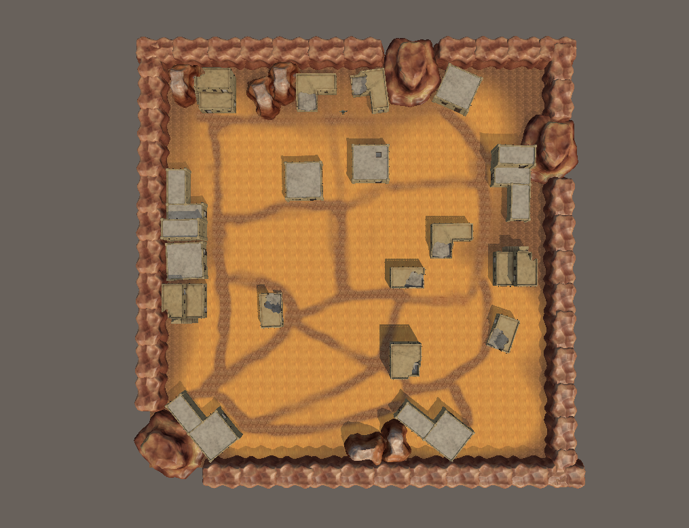
 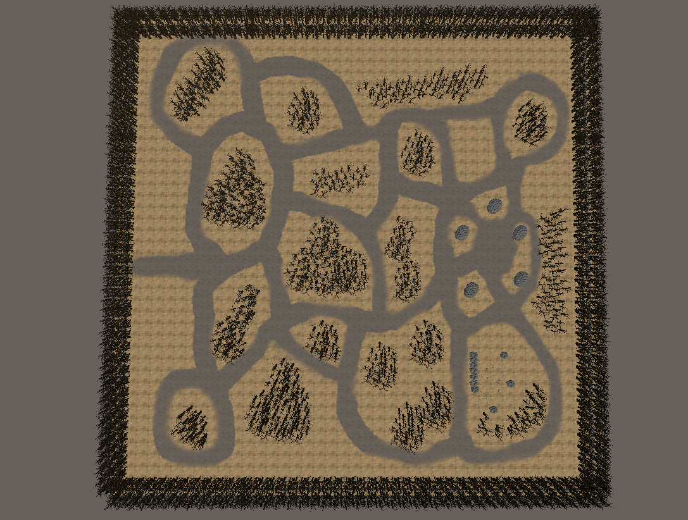
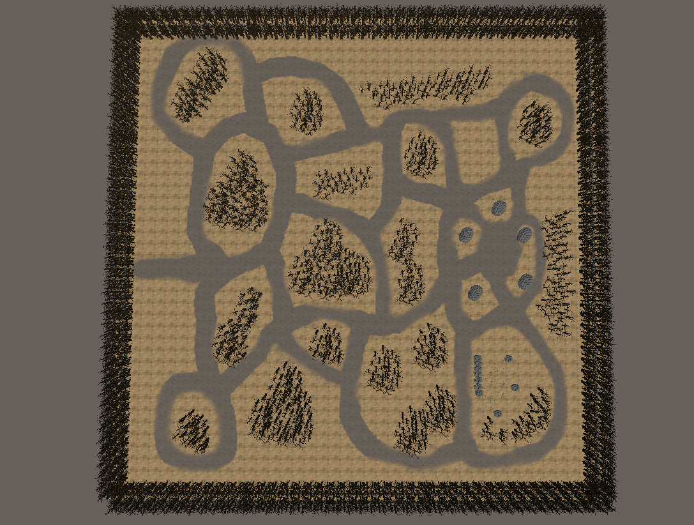

 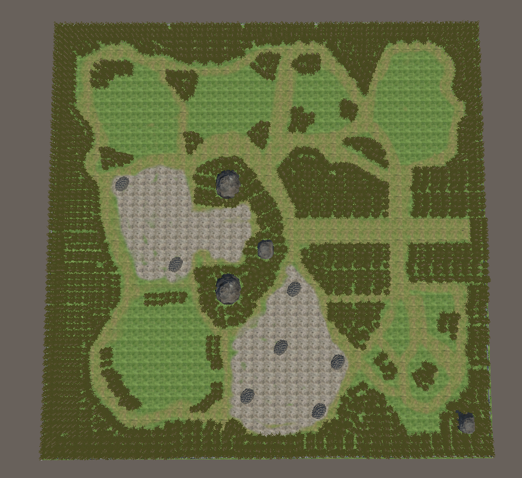
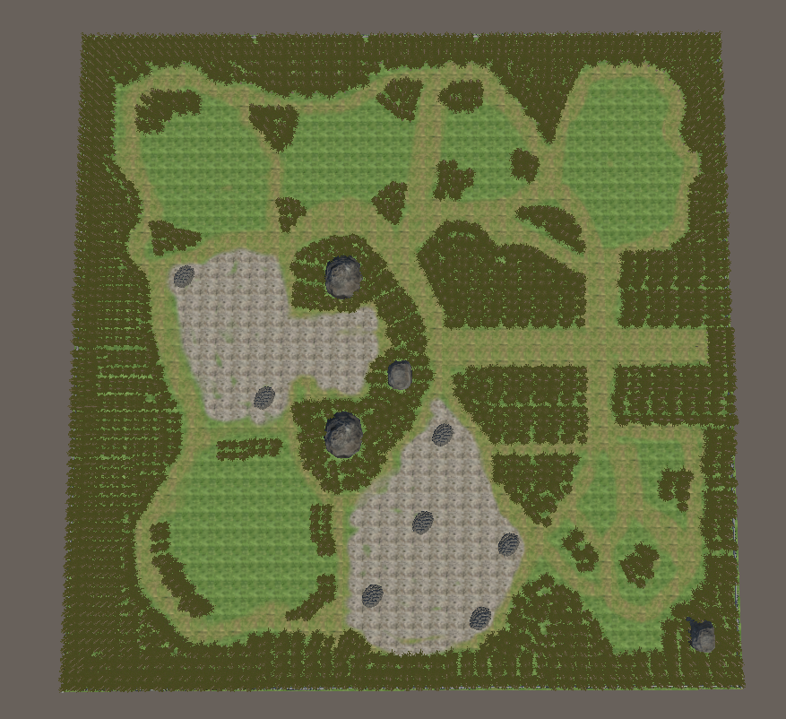


 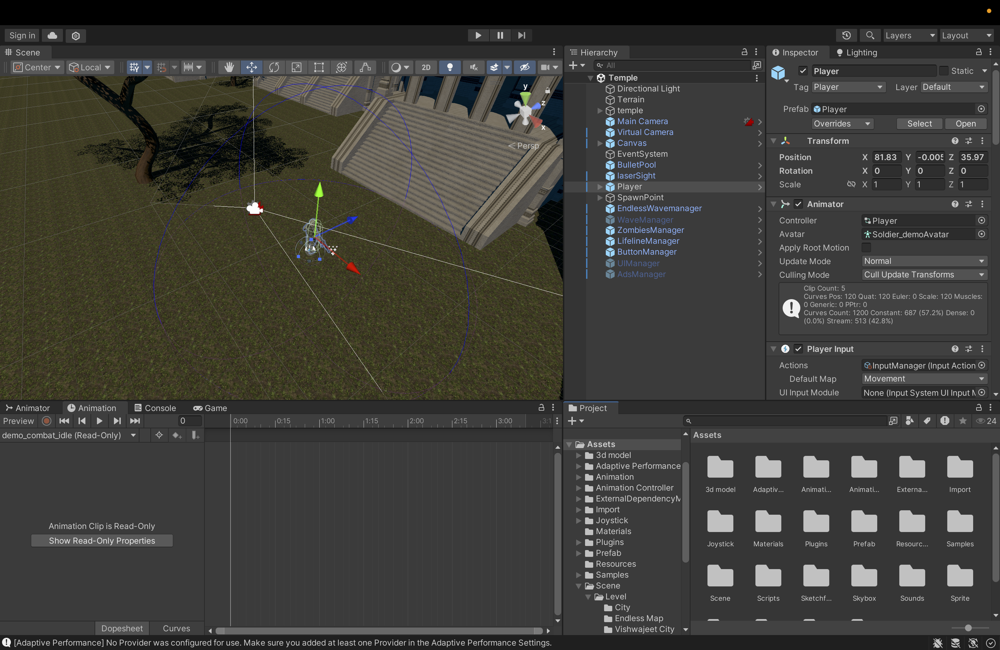
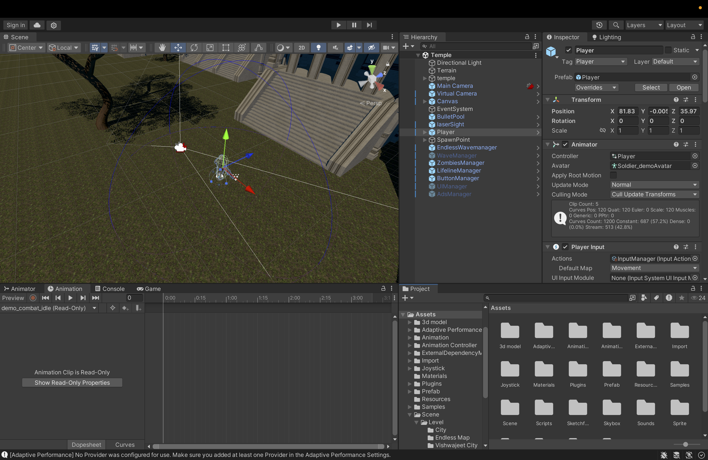
 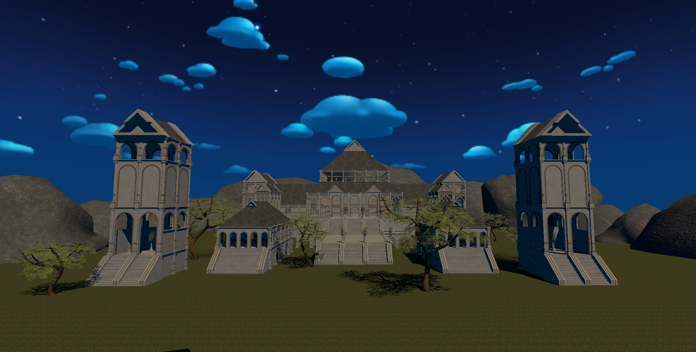
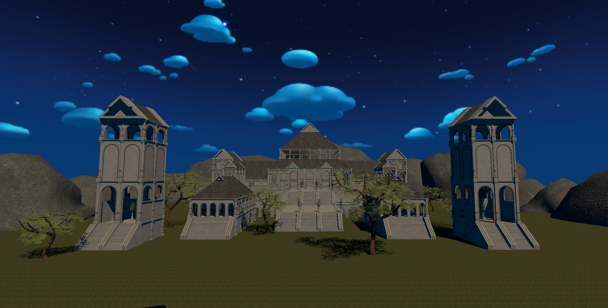

The Withering World is a story-driven environmental simulation game where players embody vulnerable wildlife navigating a human-altered world. It blends emotion, education, and gameplay to highlight deforestation, pollution, and climate change.
The Withering World is a simulation game developed as part of my capstone project, targeting players aged 13 and above. This game aims to immerse players in the lives of animals struggling to survive amid human expansion and environmental destruction. Through interactive storytelling and gameplay, the game promotes awareness about deforestation, pollution, and the urgency for climate action.
By stepping into the paws, wings, and fins of animals like rabbits, birds, and marine creatures, players experience the devastating effects of human activities, bringing attention to environmental issues that are often overlooked in mainstream media. The game challenges players to reflect on their personal impact on the planet and inspires them to take action toward conservation.
🌱 Will You Make a Difference? Step into the wild and experience the consequences of human impact through the eyes of those most affected.
📄 Download Research Paper (PDF)


Unlike other environmental games like Endling – Extinction is Forever or Subnautica, The Withering World grounds its narrative in the present-day environmental crises. It offers a more relatable and impactful portrayal of ecological issues, featuring multiple animal perspectives and a variety of environmental challenges. This approach provides players with a well-rounded understanding of topics such as deforestation, pollution, and climate change, encouraging empathy and inspiring real-world action for conservation.
Take control of a high-tech delivery drone in Fragile Flight, a physics-based 3D side-scrolling adventure where precision and care are everything! Navigate through bustling cityscapes filled with hazards—one wrong move, and your cargo is history.
Transport a fragile package through an environment packed with obstacles like power lines, birds, storms, and enemy drones.
Fragile Flight is a 2-day prototype by a two-member team. Features and polish are actively in progress.
🛫 Are You Ready for Takeoff? Test your piloting skills, upgrade your drone, and prove you're the ultimate delivery pilot!
Event: WAVES Game Jam 2024
Theme: Handle with Care
This game was created for the WAVES Game Jam 2024, with the theme "Handle with Care". The design and gameplay revolve around the core idea of carefully transporting fragile items through a dangerous environment.
 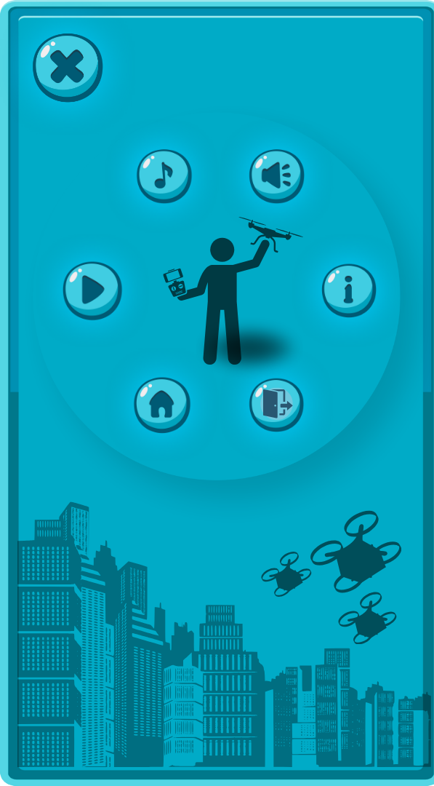
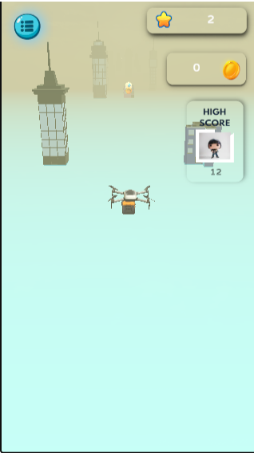
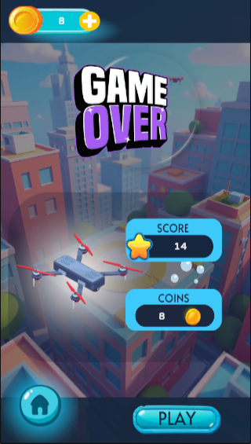
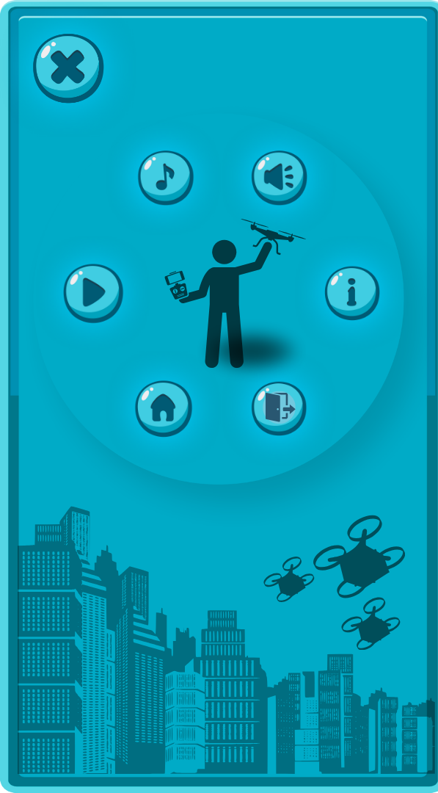
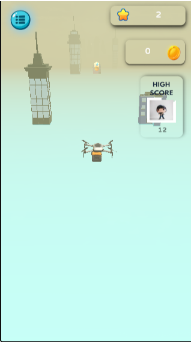
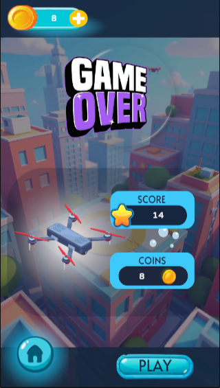
Ranked #1 in the Game Jam event.
Riptide Rescue is an impactful and educational browser game created as part of a college project. Developed using HTML, CSS, and JavaScript, it incorporates custom graphics designed in Adobe Illustrator.
The game promotes awareness around drowning prevention and supports the Swachh Bharat initiative, blending gameplay with social responsibility.
This project demonstrates a blend of technical skill, creativity, and purpose-driven design.